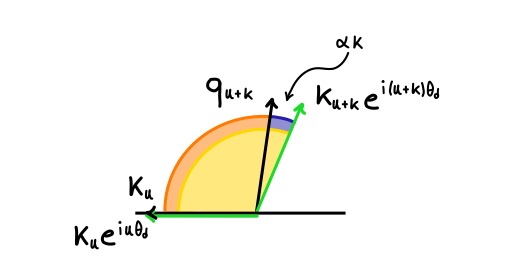
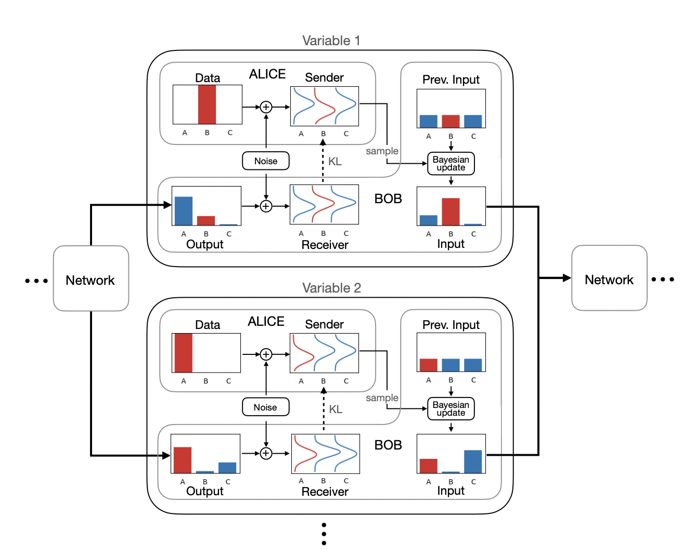

Extending LLMs context length is an open challange, let's see why it's so important and which are the main approaches to do it...
Read Blog
Generative models are a powerful class of machine learning models that can learn to generate new, realistic samples from a given distribution...
Read Blog